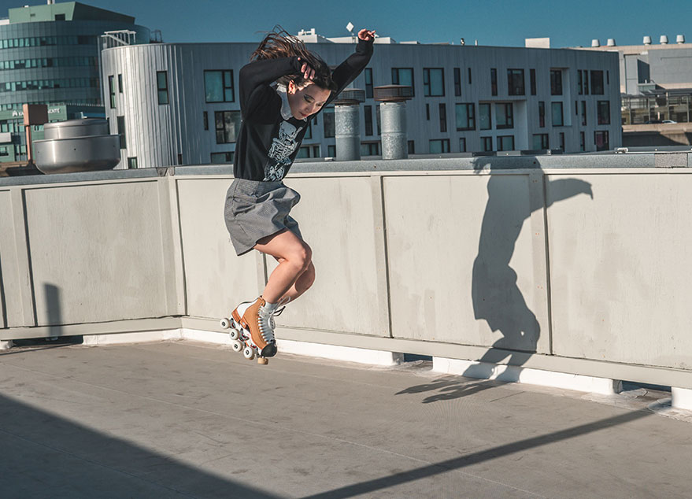

3D Self-Portrait
Client: Personal Project
My Role: Designer, 3D Modeling, Motion, Textures
A recreation of one of my favorite photos taken by a dear friend in my 3D character style.
Visual Development

Photograph of Cat Hong in new roller skates by Reina Murooka, 2021.